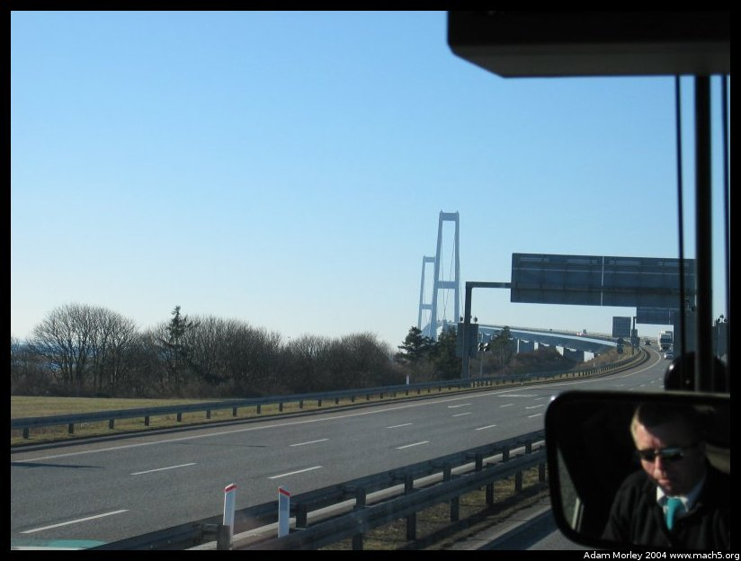
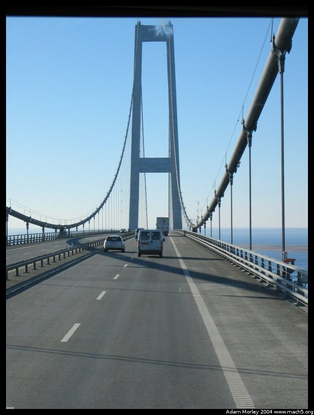
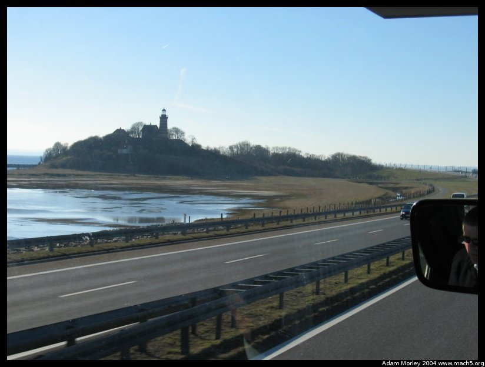
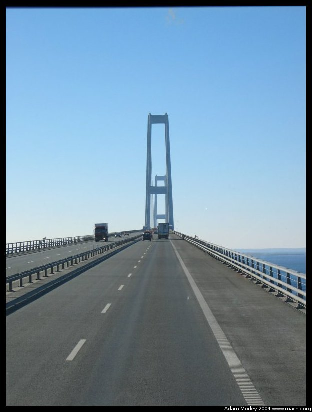
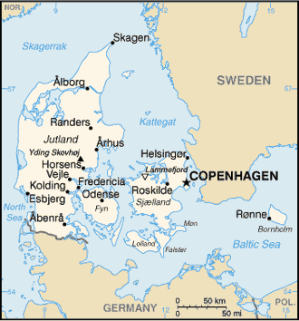

Coming up on the bridge!
The bridge over the big belt (stor bælt). Quite a big bridge, though not as large as the bridge to Sweden. This bridge has a set of train tracks next to it for part of the way. The train tracks are actually underwater at this moment. In a tunnel, for those of you who were concerned. You can even see bugsplat on the bus window.
The train comes up on this convinetly placed island which houses a bird sanctuary and a lighthouse. Obviously, being a land of hundreds of islands, Denmark is a veritable treasure trove of lighthouses for those who like such things. I would be one of those who enjoys lighthouses.
Another picture of the pylons. Quite tall. A map would no doubt be helpful.
I hope the CIA doesn't put me in the klink for using their map. The image is borrowed from the CIA's World Fact Book. See cia.gov, it's quite handy. Anyways, the big belt is the waterway between the island (øen - the island) labeled Fyn and Sjælland. As you can see, it's a fair distance for a bridge! It used to be you could only cross it using ferries, which might explain why the country seems much bigger than the fourish hours it takes to cross it. And why they subtitle the speech (on TV) of people from the western part of Denmark, called, "Jutland." I have a rather soft spot in my heart for Jutland, as I traveled out there for a week and found the country and the people to be quite fine.You may also like to see pictures of the bridge to Sweden here.
Adam can be reached at adam dot morley at gmail dot com